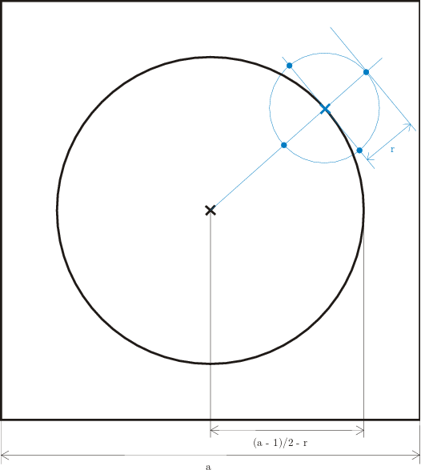

Local Intensity Order Pattern descriptor
liop.h implements Local Intensity Order Pattern descriptor (LIOP) as proposed in [24]
Please see LIOP fundamentals for a technical description of LIOP descriptor.
Getting started
The Following code demonstrates how tow to use liop.h in the C programming language in order to compute liop descriptor from a patch.
#include <vl/liop.h>
// Create a new object instance (these numbers coresponds to parameter
// values proposed by authors of the paper, except for 41)
VlLiopDesc * liop = vl_liopdesc_new(4,6,6,5,41);
// allocate the descriptor array
// compute descriptor from a patch (in this case, the patch must be
// an array of length 41*41=1681)
compute_liop_descriptor(liop, patch, desc);
// delete object instance
vl_liopdesc_delete(liop);
Not all pixels from the patch will contribute to the descriptor as sample points. The sample points belong to the area of the inner circle, as all neighbours of sample points has to be computed from the patch. Please see the image below for better understanding.

LIOP patch layout